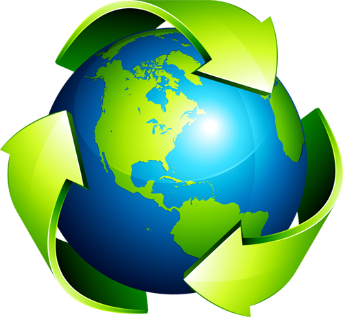

Az újrahasznosítás legfontosabb aspektusa az anyagharmónia és a hulladékcsökkentés. A cél az, hogy a felhasznált anyagokat visszaforgassuk a gazdaságba, csökkentve ezzel az új nyersanyagok kitermelésének szükségességét, és mérsékelve a hulladéklerakókba kerülő szemét mennyiségét.
Hulladéknak azokat a tárgyakat nevezzük, amelyek az ember mindennapi élete során keletkeznek, és a keletkezésük helyén (gyárak, üzemek, háztartás stb.) feleslegessé váltak, tőlük tulajdonosuk megválik, vagy megválni köteles.
A szilárd hulladék tárgyakon kívül vannak egyéb anyagok is, melyek a környezetbe jutva környezetszennyező anyagok lesznek, mint pl. légneműek (légszennyezés, üvegházhatású gázok) vagy folyékonyak is, de lehetséges, hogy egy folyékony szennyező anyag talajszennyező legyen, vagy egy szilárd anyag vízszennyezést okozzon.
Magyarországon a Hulladékkezelést a MOHU biztosítja kizárólagosan.
Ez vonatkozik a hulladékbegyűjtésre és a hulladék feldolgozására is.
A legnagyobb lakosságot érintő nemrég befejezett projektjük a Repont autómaták országos kihelyezése és a rendszer folyamatos üzemeltetésének megszervezése volt.
Jelenleg átlagosan heti több mint 20 millió müanyagot/üveget visznek vissza a Repont autómatákba a lakossági felhasználók.
A Moho oldalán pontosabb infók is elérhetők az alábbi linkre kattintva!
MOHU